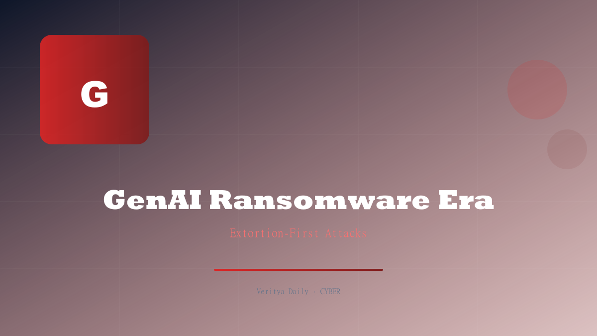

Weaponized GenAI + Extortion-First: The New Age of Ransomware

Key Takeaways
- Zscaler analysis reveals ransomware is shifting to extortion-first strategies
- Weaponized generative AI is being used to craft attacks, phishing, and victim communications
- Public leak sites have become the primary pressure mechanism
- Ransomware samples show evidence of AI-driven code generation
- The threat landscape is evolving faster than traditional defenses can adapt
The Extortion-First Shift: Why Encryption Is No Longer the Point
The ransomware playbook has fundamentally changed. According to Zscaler's latest threat analysis, ransomware operators are increasingly adopting an extortion-first strategy — and it's working. Instead of encrypting a victim's systems and demanding payment for the decryption key, attackers now focus on stealing data and threatening to publish it.
This shift is driven by several factors:
- Encryption is less effective: Improved backup strategies and faster recovery tools mean organizations can often restore encrypted systems without paying
- Data theft creates leverage: Threatening to release sensitive customer data, proprietary information, or internal communications is often more damaging than system downtime
- Regulatory pressure: Organizations face GDPR, CCPA, and other regulatory penalties for data breaches — paying the ransom may be cheaper than the regulatory fines
- Reputational damage: The threat of public exposure creates urgency that encryption alone doesn't
In the extortion-first model, attackers infiltrate a network, exfiltrate as much data as possible, and then demand payment to prevent publication. Encryption may still be deployed as a secondary pressure tactic, but the primary leverage is the threat of data exposure.
Encryption locks your systems. Extortion locks your reputation. The latter is far harder to recover from — and attackers know it.
| Traditional Ransomware | Extortion-First Ransomware |
|---|---|
| Encrypt systems first | Steal data first |
| Demand payment for decryption | Demand payment to prevent leak |
| Downtime is primary pressure | Reputation is primary pressure |
| Backups can defeat it | Backups don't help |
| Single extortion model | Double/triple extortion model |
Weaponized GenAI: AI as an Attack Tool
The most alarming finding from Zscaler's analysis is the weaponization of generative AI in ransomware operations. Threat actors are leveraging GenAI tools at every stage of the attack lifecycle:
Reconnaissance and Targeting: AI models are being used to analyze publicly available information about target organizations — SEC filings, press releases, employee LinkedIn profiles — to identify high-value targets and potential entry points. What previously took human analysts days can now be done in minutes.
Phishing and Social Engineering: GenAI produces remarkably convincing phishing emails that mimic corporate communication styles, include industry-specific terminology, and reference real events. These emails are virtually indistinguishable from legitimate communications, defeating traditional security awareness training.
Vulnerability Research: AI tools are being used to scan code repositories, analyze patch notes, and identify vulnerabilities faster than defenders can patch them. The time between a vulnerability being disclosed and its exploitation in ransomware attacks has shrunk from weeks to days.
Victim Communication: Ransomware groups are using AI to generate personalized extortion messages, complete with specific details about the stolen data and tailored threats. Some groups have deployed AI chatbots to negotiate with victims in real-time.
- Lure generation: AI-crafted documents that bypass email security filters
- Code obfuscation: AI tools that generate polymorphic malware variants
- Data analysis: AI that categorizes stolen data to identify the most damaging information for leverage
- Negotiation automation: AI chatbots that handle ransom negotiations
Public Leak Sites: The New Pressure Tactic
Central to the extortion-first strategy is the use of public leak sites — websites on the clearnet or darknet where ransomware groups publish stolen data from victims who refuse to pay. These sites serve multiple purposes:
Demonstration of capability: By publishing some stolen data, groups prove they actually have the files — building credibility with future victims that their threats are real.
Punishment for non-payment: Victims who refuse to pay see their sensitive data published, creating real consequences and encouraging future victims to comply.
Marketplace creation: Published data can be monetized separately — sold to other threat actors, competitors, or data brokers.
Reputational warfare: Public leaks generate media coverage, which increases pressure on the victim organization from customers, regulators, and shareholders.
The number of active leak sites has grown significantly, with major ransomware groups maintaining dedicated portals. Some sites feature search functionality, allowing visitors to search through stolen data — making the threat of publication even more concrete.
Ransomware has evolved from a digital hostage situation to a full-spectrum extortion business. The leak site is the showroom — and your data is on display.
AI-Driven Ransomware Code: What the Samples Show
Zscaler's analysis of ransomware samples reveals telltale signs of AI-generated code. The evidence includes:
- Unusual code structure: Ransomware variants show code patterns consistent with AI-generated output — clean formatting, consistent naming conventions, and algorithmic approaches that differ from human-written malware
- Rapid variant generation: New ransomware variants are appearing at a pace that suggests automated generation, with minor modifications to evade signature-based detection
- Improved evasion: AI-assisted code includes more sophisticated anti-analysis techniques, making reverse engineering harder for security researchers
- Cross-platform capabilities: Some variants show code adapted for multiple operating systems — Windows, Linux, and ESXi — suggesting AI-assisted porting
- Dynamic payload generation: Samples show evidence of AI-driven polymorphism, where the malware rewrites its own code to evade detection
The use of AI in code generation means that ransomware development cycles have accelerated dramatically. What previously required skilled malware developers can now be partially automated, lowering the barrier to entry for new ransomware groups.
Zscaler's Analysis: Key Findings
Zscaler's comprehensive analysis of the current ransomware landscape reveals several critical trends:
Ransomware-as-a-Service (RaaS) is thriving. The affiliate model continues to dominate, with core developers providing malware and infrastructure while affiliates conduct the actual attacks. AI tools have made it easier for affiliates to operate with less technical expertise.
Attack timelines are compressing. The average time from initial access to data exfiltration has decreased. AI-assisted reconnaissance and lateral movement automation mean that attackers can move faster than defenders can detect them.
Industry targeting is shifting. Healthcare, education, and manufacturing remain top targets, but there's increased targeting of AI and technology companies — likely because their data is more valuable and their rapid growth may have outpaced security maturity.
Payment trends are concerning. Despite law enforcement actions and government discouragement of ransom payments, the extortion-first model is generating revenue. The shift from encryption to data theft makes it harder for organizations to refuse payment — you can restore from backups, but you can't un-leak data.
| Attack Phase | Traditional Approach | AI-Enhanced Approach |
|---|---|---|
| Reconnaissance | Manual research, days | AI analysis, minutes |
| Initial Access | Generic phishing | AI-personalized phishing |
| Lateral Movement | Manual exploration | Automated AI mapping |
| Data Exfiltration | Bulk transfer | AI-prioritized theft |
| Extortion | Generic ransom note | AI-personalized threats |
Defending Against the New Ransomware Era
The convergence of extortion-first strategies and weaponized GenAI demands a fundamental rethinking of ransomware defense. Here's what organizations should prioritize:
- Assume breach mentality: Accept that prevention will fail. Focus on detection, response, and resilience
- Zero Trust architecture: Implement strict access controls, micro-segmentation, and continuous verification — limit what attackers can access even if they get in
- Data loss prevention (DLP): Since extortion-first attacks focus on data theft, DLP tools that detect and block large-scale data exfiltration are critical
- Immutable backups: Maintain backups that cannot be modified or deleted — even by administrators. This defeats encryption, even if it doesn't address data theft
- AI-powered defense: Deploy AI-driven security tools that can detect anomalous behavior patterns indicative of AI-assisted attacks
- Incident response planning: Have a detailed, tested incident response plan that includes extortion scenarios — not just encryption scenarios
- Legal and regulatory preparation: Pre-establish relationships with legal counsel, breach notification specialists, and law enforcement contacts
- Employee training upgraded: Traditional phishing training is insufficient against AI-crafted lures. Use AI-powered phishing simulation tools that match the sophistication of real attacks
- Threat intelligence: Monitor ransomware leak sites for your organization's data. Early detection of a breach can prevent public exposure
The ransomware landscape of 2026 bears little resemblance to the ransomware of even three years ago. The combination of extortion-first strategies and weaponized generative AI has created a threat environment where attackers are faster, more convincing, and more relentless than ever before.
Organizations that continue to rely on traditional defenses — backups alone, signature-based antivirus, annual security training — will find themselves outmatched. The only effective response is to match AI-driven attacks with AI-driven defense, and to build security architectures that assume the perimeter will be breached.
The question is no longer "will we be attacked?" but "when we're attacked, how fast can we detect it, contain it, and prevent data from leaving?" That's the new ransomware reality.